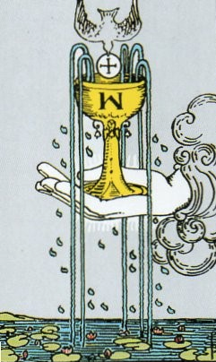
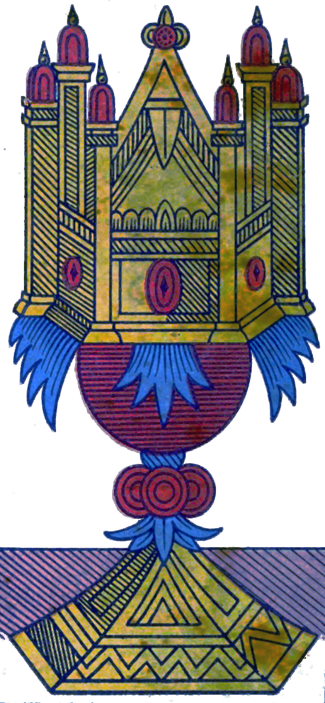
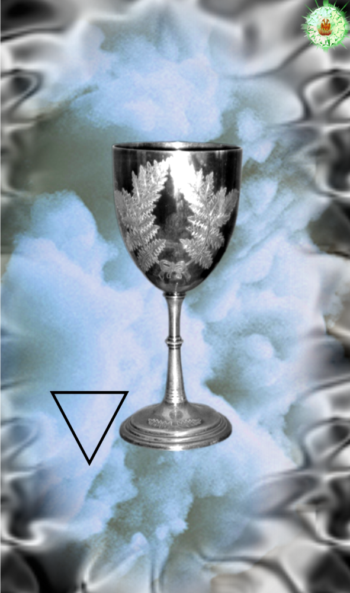
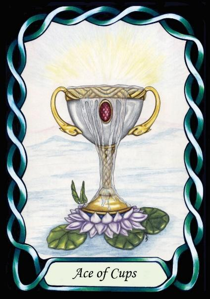

Ace of Cups




Water Emotions
The Ace of Cups is the Principle of Water, which is fundamental to life. It is commonly attributed to the emotions, as we are generally happy when life is easy, and unhappy when life is difficult. Liquid.
Water imbues in people the ability to understand emotions, which are in turn triggered by the needs of survival (see Pentacles below)
[P6] … leaving Earth and Water below.
[P7] Earth and Water stayed so intermingled that they could not be distinguished from each other. …
It represents the element of Water, as a metaphor for the emotions, but specifically for personal, private emotions, rather than those of the populace as a whole.
RWS Imagery
In the Waite-Smith deck, a cup, symbol of Water, issues forth from the cloud, as described in the Pymander via a hand. Life evolved in Water, and there are theories that early humans evolved in the wet swampy environment of Lake Victoria, Africa – hence a shortage of hair and an Air-trapping nose.
Certainly, Water is essential to life, and the prevalence of swimming pools in affluent societies speaks strongly of its emotional importance.